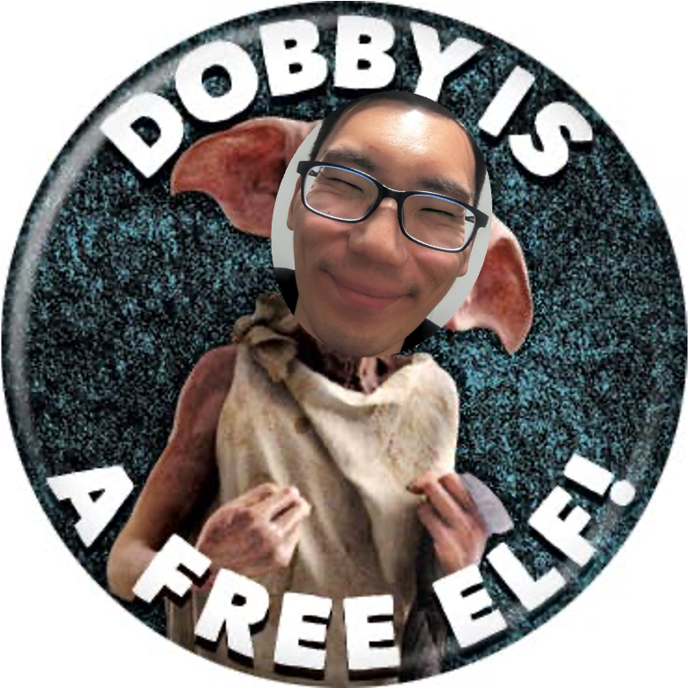

Brian is a free elf!
Hey y'all! As you know, ater almost four years, I have left my (enervating, soulless, cold-porridge-of-a) job at Appian Corporation to pursue my passion for teaching! To celebrate, I'm hosting a get-together at my place on my last day of work. I hope you can come!
I'll have some food prepared (specifics below), but I would appreciate if anyone who can also brings food and drinks. There will be some corny activities per usual, and yes, you have to participate!
There is one sacrosanct rule: YOU MAY NOT TALK ABOUT WORK!!! You are my closest friends in New York and I'm friends with precisely zero of you for your professional accomplishments. (You may of course talk about what you're passionate about, which, if that happens to be related to your occupation, is permissible. But absolutely no "I'm in B2B Saas sales which is actually super interesting because ...") No "So what do you do" !!! Instead, try:
Details and such: